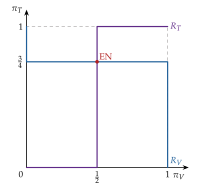
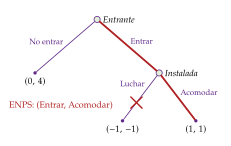
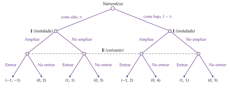
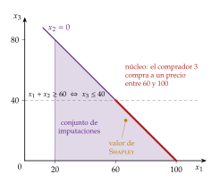
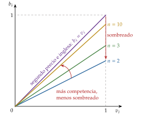
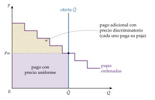

Tema 3.A.14
Teoría de juegos. Principales conceptos. Aplicaciones, con especial referencia a las subastas.
Equilibrio de Nash, ENPS, juegos bayesianos y señalización, negociación, núcleo y Shapley, diseño de mecanismos y subastas con la equivalencia de ingresos.
Introducción
Enganche:
«Quien hace la ley hace la trampa», dice el refrán. La teoría de juegos estudia las 2 caras de esa frase: cómo juega cada uno cuando lo que gana depende de lo que hagan los demás, y cómo escribir las reglas para que la trampa no compense.
Un ejemplo reciente: en julio de 2021, el Estado subastó la banda de 700 MHz para el 5G. Tras 12 rondas de pujas, adjudicó concesiones por 1.010 millones de euros (Ministerio de Asuntos Económicos y Transformación Digital, 2021). Ningún funcionario sabía cuánto valía ese espectro para cada operador; fue el formato de la subasta el que hizo que lo revelaran pujando.
Detrás está la pregunta de esta exposición: ¿se puede predecir lo que harán agentes racionales cuyas decisiones dependen unas de otras y que se anticipan unos a otros? ¿Y se pueden diseñar las reglas para que, jugando en su propio interés, revelen lo que saben?
Relevancia:
Teórica: la teoría de juegos es hoy el lenguaje común de la microeconomía. Lo reconocen 6 premios Nobel:1
en 1994, a Harsanyi, Nash y Selten, «por su análisis pionero de los equilibrios en la teoría de los juegos no cooperativos» (The Nobel Prize, 1994);
en 1996, a Mirrlees y Vickrey, «por sus contribuciones fundamentales a la teoría económica de los incentivos con información asimétrica» (The Nobel Prize, 1996);
en 2005, a Aumann y Schelling, «por haber mejorado nuestra comprensión del conflicto y la cooperación mediante el análisis de la teoría de juegos» (The Nobel Prize, 2005);
en 2007, a Hurwicz, Maskin y Myerson, «por haber sentado las bases de la teoría del diseño de mecanismos» (The Nobel Prize, 2007);
en 2012, a Roth y Shapley, «por la teoría de las asignaciones estables y la práctica del diseño de mercados» (The Nobel Prize, 2012), y
en 2020, a Milgrom y Wilson, «por sus mejoras de la teoría de las subastas y sus invenciones de nuevos formatos de subasta» (The Nobel Prize, 2020).
Empírica: el oligopolio [ver tema 3.A.19], la negociación salarial [ver tema 3.A.27], la entrada en los mercados [ver tema 3.A.15], las guerras comerciales [ver tema 3.B.7] y la credibilidad de los bancos centrales [ver tema 3.A.36] son juegos, y se analizan como tales.
De política económica: el Estado subasta deuda, espectro radioeléctrico, apoyo a las renovables y derechos de emisión, y persigue los cárteles que se reparten las licitaciones públicas. En todos los casos, el diseño de las reglas decide cuánto se recauda y quién se queda con el bien.
Contextualización:
Concepto. La teoría de juegos estudia las situaciones de interdependencia estratégica: aquellas en las que lo que obtiene cada agente depende de sus decisiones y de las de los demás, y cada uno lo sabe. Un juego es la representación formal de una de esas situaciones. La teoría de la decisión con riesgo es el caso de un solo jugador frente a la naturaleza, que no reacciona a lo que él haga [ver tema 3.A.10].
Desde un punto de vista histórico:
Hay antecedentes en el siglo XIX: el duopolio de Cournot (1838), cuyo equilibrio es un caso particular del de Nash, y su crítica por Bertrand (1883). En 1913, Zermelo prueba que el ajedrez tiene solución (Zermelo, 1913).
La teoría nace como disciplina con el teorema minimax de von Neumann (1928) y, sobre todo, con Theory of Games and Economic Behavior de von Neumann y Morgenstern (1944), cuyo apéndice de la 2.ª edición (1947) axiomatiza la utilidad esperada [ver tema 3.A.10].
Entre 1950 y 1975 se fijan los conceptos de solución: el equilibrio de Nash (1950a), la negociación (Nash, 1950b), el valor de Shapley (1953), la perfección en subjuegos (Selten, 1965) y los juegos con información incompleta (Harsanyi, 1967–1968).
Desde los años 70 se aplica de forma masiva: la organización industrial, la economía de la información, el comercio internacional, la política monetaria y, desde los 90, el diseño de subastas y de mercados.
Desde un punto de vista teórico, en competencia perfecta y en monopolio no hace falta: el precio-aceptante es demasiado pequeño para influir en los demás y el monopolista no tiene rivales [ver tema 3.A.16] [ver tema 3.A.17]. La teoría de juegos es necesaria cuando hay pocos agentes y cada uno influye en lo que obtienen los demás.
Problemática (preguntas clave):
¿Qué cabe predecir cuando cada uno elige pensando en lo que harán los demás? ¿Qué concepto de solución usar en cada tipo de juego?
¿Cuándo es creíble una amenaza o una promesa? ¿Cambia la predicción cuando se mueve por turnos, cuando el juego se repite o cuando alguien sabe algo que los demás no saben?
¿Cómo se reparten las ganancias de cooperar?
¿Pueden diseñarse las reglas para que los jugadores revelen su información? En particular, ¿qué formato de subasta conviene al vendedor y cuál a la sociedad?
Estructura: la exposición se divide en 3 bloques, que siguen el orden del título: primero los principales conceptos y después sus aplicaciones.
Principales conceptos: juegos con información completa (I): los elementos de un juego y su clasificación (I.1), los juegos estáticos y el equilibrio de Nash (I.2) y los juegos dinámicos, con la perfección en subjuegos, la credibilidad y la repetición (I.3).
Principales conceptos: información incompleta, negociación y juegos cooperativos (II): los juegos bayesianos (II.1), el equilibrio bayesiano perfecto y la señalización (II.2), y la negociación y los juegos cooperativos, con el núcleo y el valor de Shapley (II.3).
Aplicaciones, con especial referencia a las subastas (III): las aplicaciones en economía (III.1), el diseño de mecanismos (III.2) y las subastas (III.3).
El orden va de menos a más información privada, porque las subastas son juegos con información incompleta. El hilo conductor es el concepto de equilibrio (tabla 1): cada paso añade un ingrediente (el tiempo, la información privada, los acuerdos vinculantes) que obliga a refinarlo, y el tercer bloque le da la vuelta a la pregunta: en lugar de predecir el resultado de un juego dado, se elige el juego que da el resultado deseado.
3.A.14. Teoría de juegos y subastas
Introducción: interdependencia estratégica; de Cournot y von Neumann a Nash, Selten y Harsanyi
I. Principales conceptos: información completa
1. Elementos, representación y clasificación (tabla del hilo conductor)
2. Estáticos: dominancia; equilibrio de Nash; mixtas y existencia; minimax
3. Dinámicos: inducción hacia atrás; ENPS (Selten); compromiso; repetidos y tradición oral
II. Principales conceptos: información incompleta, negociación y cooperativos
1. Bayesianos (Harsanyi): equilibrio bayesiano de Nash
2. Dinámicos: equilibrio bayesiano perfecto; señalización; criterio intuitivo
3. Negociación (Nash, Rubinstein) y cooperativos: núcleo; valor de Shapley
III. Aplicaciones, con especial referencia a las subastas
1. Aplicaciones en economía
2. Diseño de mecanismos: principio de revelación; límites
3. Subastas: formatos; 1.º y 2.º precio; equivalencia; subasta óptima; valores afiliados; multiunidad; España
Conclusión
Reparto del cante: introducción, 2′30″; I, 9′ (I.1, 1′30″; I.2, 4′; I.3, 3′30″); II, 7′30″ (II.1, 2′; II.2, 2′; II.3, 3′30″); III, 10′ (III.1, 1′30″; III.2, 2′; III.3, 6′30″), y conclusión, 1′. La tabla de clasificación de los juegos (tabla 1) se dibuja al hablar de la clasificación (I.1) y se queda en la pizarra: cada apartado rellena su casilla. Las funciones clave que se conservan son la definición del equilibrio de Nash (1), la solución de negociación de Nash (3) y la puja de primer precio (5). El tribunal pregunta en el test sobre todo dominancia, equilibrio de Nash en matrices y estrategias mixtas: el anexo A recoge cómo se calculan. Las derivaciones de las subastas están en el anexo D.
I. Principales conceptos (I): juegos con información completa
En el cante: los elementos de un juego y la tabla de clasificación, que se queda en la pizarra (1′30″); la dominancia con el dilema del prisionero en su matriz, la definición del equilibrio de Nash (1), que se recuadra, sus limitaciones y, en una frase cada uno, la existencia en mixtas y el minimax (4′); el juego de entrada con su árbol, la inducción hacia atrás, el ENPS y el compromiso (2′), y los juegos repetidos con la condición del gatillo (2) y el teorema de tradición oral (1′30″). Son de profundización el juego sin estrategias dominadas, el juego de la inspección y su gráfico, el ciempiés, los refinamientos de la reputación y las notas al pie.
Empezamos por los juegos en los que todos conocen los pagos de todos. Conclusión anticipada: con información completa, el equilibrio de Nash es el concepto central de solución; existe siempre en los juegos finitos, pero puede ser ineficiente (dilema del prisionero), múltiple o apoyarse en amenazas no creíbles. La perfección en subjuegos lo afina en los juegos dinámicos, y la repetición permite sostener la cooperación sin contratos.
I.1. Elementos, representación y clasificación de los juegos
Elementos. Un juego queda descrito por 4 elementos (Mas-Colell, Whinston y Green, 1995, cap. 7):
los jugadores, \(i\in N=\{1,\dots,n\}\);
las reglas: quién mueve, cuándo, qué sabe cuando mueve y qué puede hacer (sus acciones);
los resultados de cada combinación de acciones, y
los pagos, \(u_i\): la utilidad que cada jugador obtiene de cada resultado. Cuando el resultado es aleatorio, el pago es la utilidad esperada, \(U_i=\mathbb{E}[u_i]\), en el sentido de von Neumann y Morgenstern [ver tema 3.A.10].
Estrategia. Una estrategia \(s_i\in S_i\) es un plan completo de acción: dice qué hará el jugador en cada situación en la que le pueda tocar mover, incluso en las que no se lleguen a dar. No es lo mismo que una acción: en un juego por turnos, la estrategia del que mueve segundo dice qué hará ante cada jugada posible del primero. Un perfil de estrategias \(s=(s_1,\dots,s_n)=(s_i,s_{-i})\) reúne una estrategia de cada jugador, donde \(s_{-i}\) son las de los demás. Las estrategias pueden ser puras (elegir con certeza) o mixtas (elegir al azar con unas probabilidades).
Racionalidad y conocimiento común. Cada jugador maximiza su pago (esperado), y la estructura del juego y la racionalidad de los jugadores son conocimiento común: todos las conocen, todos saben que todos las conocen, y así sucesivamente (Aumann, 1976).
Representaciones:
la forma extensiva (árbol del juego, gráfico 2): cada nodo de decisión es un momento en que mueve un jugador; cada rama, una acción; en los nodos terminales se escriben los pagos. Un conjunto de información agrupa los nodos de un jugador que este no puede distinguir cuando le toca mover; se dibuja uniéndolos con una línea discontinua;
la forma normal o estratégica (matriz de pagos, tabla 2): da, para cada jugador, sus estrategias y el pago de cada perfil. Cada forma extensiva tiene una única forma normal, pero no al revés: la forma normal pierde el orden de las jugadas, que es justo lo que importa en los juegos dinámicos.
Clasificación (tabla 1):
no cooperativos frente a cooperativos, según se puedan firmar o no acuerdos vinculantes;2
estáticos o simultáneos (nadie observa lo que han elegido los demás antes de elegir) frente a dinámicos o secuenciales;
con información perfecta, si cada jugador, cuando le toca mover, conoce todas las jugadas anteriores (todos sus conjuntos de información tienen un solo nodo), o imperfecta si no. Un juego simultáneo es de información imperfecta: el que mueve «segundo» no ve lo que hizo el primero;
con información completa, si los pagos de todos son conocimiento común, o incompleta, si algún jugador no conoce los pagos (el tipo) de otro (II). Son 2 cosas distintas: la información completa se refiere a los pagos, y la perfecta, a las jugadas; el dilema del prisionero tiene información completa e imperfecta. Harsanyi (1967–1968) convierte la información incompleta en imperfecta (II.1). En la economía de la información, la selección adversa se modeliza como información incompleta y el riesgo moral como imperfecta [ver tema 3.A.13];
de suma cero (lo que gana uno lo pierde otro) o de suma variable, y
de una sola vez o repetidos, un número finito o infinito de veces.
El hilo conductor: cada combinación de tiempo e información tiene su concepto de solución, y cada uno refina al anterior: todo ENPS es un EN, y todo EBP es un EBN. Las subastas (III.3) son juegos bayesianos.
| Estáticos (simultáneos) | Dinámicos (secuenciales) | |
|---|---|---|
| Información completa | equilibrio de Nash (EN) (I.2) |
equilibrio de Nash perfecto en subjuegos (ENPS) (I.3) |
| Información incompleta | equilibrio bayesiano de Nash (EBN) (II.1) |
equilibrio bayesiano perfecto (EBP) (II.2) |
| Cooperativos | solución de negociación de Nash, núcleo y valor de Shapley (II.3) | |
Fuente: elaboración propia a partir de Gibbons (1992, prefacio y cap. 4) y Mas-Colell, Whinston y Green (1995, caps. 7-9).
I.2. Juegos estáticos: dominancia y equilibrio de Nash
Una vez descritos los elementos de un juego, pasamos a predecir cómo se juega cuando todos eligen a la vez. Empezamos por la predicción que menos exige a los jugadores, la dominancia, y pasamos al concepto central, el equilibrio de Nash.
I.2.1. Dominancia y dilema del prisionero
Idea: la predicción más sólida es la que solo exige que cada jugador sea racional: no elegir nunca algo que es peor pase lo que pase.
Definiciones (Mas-Colell, Whinston y Green, 1995, cap. 8):
\(s_i\) es una estrategia estrictamente dominante si da al jugador más que cualquier otra, hagan lo que hagan los demás: \(u_i(s_i,s_{-i})>u_i(s_i',s_{-i})\) para toda \(s_i'\neq s_i\) y toda \(s_{-i}\in S_{-i}\);
\(s_i'\) está estrictamente dominada por \(s_i\) si \(u_i(s_i,s_{-i})>u_i(s_i',s_{-i})\) para toda \(s_{-i}\), y débilmente dominada si \(u_i(s_i,s_{-i})\geq u_i(s_i',s_{-i})\) para toda \(s_{-i}\), con desigualdad estricta para alguna.
Ejemplo: el dilema del prisionero (Tucker, 1950). 2 detenidos, incomunicados, pueden callar o confesar (tabla 2; pagos en años de cárcel, con signo negativo).
Confesar es estrictamente dominante para los 2 (\(0>-1\) y \(-5>-10\)), y el resultado (Confesar, Confesar) es peor para ambos que (Callar, Callar): la racionalidad individual lleva a un resultado colectivamente ineficiente en el sentido de Pareto.
Es la estructura del cártel [ver tema 3.A.19], del polizón en los bienes públicos [ver tema 3.A.23], de las guerras arancelarias [ver tema 3.B.7] y de los programas de clemencia [ver tema 4.A.15].
Eliminación iterativa de estrategias estrictamente dominadas. Si la racionalidad es conocimiento común, se pueden ir eliminando las estrategias dominadas de cada jugador y, en el juego reducido, las que pasen a estarlo. El orden en que se eliminen no altera el resultado, pero cada ronda exige un nivel más de conocimiento común. Con estrategias débilmente dominadas el orden sí importa.
Valoración: pocas veces existe una estrategia dominante, y la eliminación iterativa suele dejar muchas estrategias sin descartar (en el juego de la tabla 3 no elimina ninguna). Hace falta un concepto más fuerte.
| Callar | Confesar | |
| Callar | \((-1,-1)\) | \((-10,\underline{0})\) |
| Confesar | \((\underline{0},-10)\) | \((\underline{-5},\underline{-5})\) |
Fuente: elaboración propia a partir de Tucker (1950) y Gibbons (1992, cap. 1). Subrayadas, las mejores respuestas; sombreado, el equilibrio.
I.2.2. Equilibrio de Nash
a) Idea
En lugar de pedir que cada estrategia sea la mejor pase lo que pase, pedimos que sea la mejor frente a lo que de hecho hacen los demás. Un perfil en el que nadie quiere cambiar de estrategia por su cuenta es estable: es un acuerdo que se cumple solo.
b) Modelo
i) Supuestos
Un juego estático con información completa: jugadores \(i\in N\), estrategias \(s_i\in S_i\) y pagos \(u_i(s_i,s_{-i})\) que son conocimiento común; jugadores racionales que eligen a la vez.
ii) Desarrollo
Mejor respuesta: la mejor respuesta de \(i\) a las estrategias de los demás es la estrategia (o el conjunto de estrategias) que maximiza su pago, \(R_i(s_{-i})=\arg\max_{s_i\in S_i}u_i(s_i,s_{-i})\). Con acciones continuas es la función de reacción del oligopolio [ver tema 3.A.19].
Definición (Nash, 1950a). Un perfil \(s^*=(s_1^*,\dots,s_n^*)\) es un equilibrio de Nash (EN) si la estrategia de cada jugador es una mejor respuesta a las de los demás:
\[u_i\big(s_i^*,s_{-i}^*\big)\;\geq\;u_i\big(s_i,s_{-i}^*\big)\quad\forall\,s_i\in S_i,\ \forall\,i\in N\qquad\Longleftrightarrow\qquad s_i^*\in R_i\big(s_{-i}^*\big)\ \ \forall\,i\tag{1}\]
La desigualdad es débil: basta con que nadie gane desviándose; puede haber otra estrategia igual de buena.
Interpretación: un EN es un perfil de expectativas que se confirman: si cada uno cree que los demás jugarán \(s_{-i}^*\), le conviene jugar \(s_i^*\), y así lo confirma. Todo EN sobrevive a la eliminación iterativa de estrategias estrictamente dominadas, pero no al revés: el EN es más exigente. Si cada jugador tiene una estrategia estrictamente dominante, ese perfil es el único EN.
Cómo se halla (anexo A): en cada columna se subraya el mejor pago del jugador 1 y en cada fila el mejor del 2; las casillas con los 2 pagos subrayados son EN. En el dilema del prisionero, el único EN es (Confesar, Confesar); en la tabla 3, (Abajo, Derecha), aunque ninguna estrategia está dominada.
Estrategias mixtas. Una estrategia mixta \(\vec{\pi}_i\in\Delta(S_i)\) es una distribución de probabilidad sobre las estrategias puras del jugador; en un juego \(2\times2\) basta con \(\pi_i\), la probabilidad con que \(i\) juega su primera estrategia. Los pagos son entonces utilidades esperadas, \(U_i=\mathbb{E}[u_i]\) [ver tema 3.A.10], y el EN se define igual, con \(\vec{\pi}\) en lugar de \(s\).
Propiedad clave: en un EN en mixtas, cada jugador está indiferente entre las estrategias puras que mezcla (si una diera más, pondría en ella toda la probabilidad). Por eso las probabilidades de un jugador se fijan para dejar indiferente al otro, y dependen de los pagos del otro, no de los suyos (ejemplo en la caja de anotaciones que sigue).
Existencia (Nash, 1950a): todo juego con un número finito de jugadores y de estrategias puras tiene al menos un equilibrio de Nash en estrategias mixtas. La prueba aplica el teorema del punto fijo de Kakutani (1941) a la correspondencia de mejores respuestas: un EN es un perfil que es mejor respuesta de sí mismo, como el equilibrio walrasiano es un vector de precios que el ajuste deja donde está [ver tema 3.A.21].3
| Izquierda | Centro | Derecha | |
| Arriba | \((0,\underline{4})\) | \((\underline{4},0)\) | \((5,3)\) |
| Medio | \((\underline{4},0)\) | \((0,\underline{4})\) | \((5,3)\) |
| Abajo | \((3,5)\) | \((3,5)\) | \((\underline{6},\underline{6})\) |
Fuente: elaboración propia a partir de Gibbons (1992, cap. 1). Subrayadas, las mejores respuestas; sombreado, el equilibrio.
Un equilibrio en mixtas: el juego de la inspección. Un trabajador elige trabajar o escaquearse; la empresa, vigilar, con un coste de 1, o no vigilar. El salario es 4 y esforzarse cuesta 2; quien se escaquea y es descubierto no cobra; trabajar produce 6 (tabla 4). No hay EN en puras: las mejores respuestas dan vueltas (gráfico 1).
La empresa vigila con la probabilidad \(\pi_V\) que deja indiferente al trabajador: trabajar le da 2 y escaquearse \(4(1-\pi_V)\), así que \(\pi_V^*=1/2\).
El trabajador trabaja con la probabilidad \(\pi_T\) que deja indiferente a la empresa: vigilar le da \(\pi_T-(1-\pi_T)=2\pi_T-1\) y no vigilar \(2\pi_T-4(1-\pi_T)=6\pi_T-4\), así que \(\pi_T^*=3/4\).
Lectura: si vigilar se encarece, la probabilidad de vigilar de la empresa no cambia (depende de los pagos del trabajador); lo que cambia es que el trabajador se escaquea más. Una estrategia mixta puede interpretarse también como la proporción de una población que juega cada acción, o como el resultado de pequeñas incertidumbres sobre los pagos de los demás (Harsanyi, 1973).
| Vigilar (\(\pi_V\)) | No vigilar | |
| Trabajar (\(\pi_T\)) | \((\underline{2},1)\) | \((2,\underline{2})\) |
| Escaquearse | \((0,\underline{-1})\) | \((\underline{4},-4)\) |
Fuente: elaboración propia (salario 4, coste del esfuerzo 2, coste de vigilar 1, producto 6) a partir de la idea de Gibbons (1992, cap. 1).

Fuente: elaboración propia.
iii) Implicaciones
El EN es la predicción mínima de un juego: si la teoría da una predicción que todos los jugadores conocen, tiene que ser un EN, porque si no alguien se desviaría.
Como existe siempre en mixtas, sirve de concepto de solución para cualquier juego finito, y es la base de todos los refinamientos que siguen (tabla 1).
Acciones continuas: si cada jugador elige una variable continua, el EN está donde se cortan las funciones de reacción. Es el equilibrio de Cournot (1838), que anticipa en más de un siglo el concepto de Nash; con precios y producto homogéneo, el de Bertrand, con precio igual al coste marginal [ver tema 3.A.19].
c) Extensiones: juegos de suma cero y teorema minimax
En un juego finito de 2 jugadores y suma cero, cada uno puede garantizarse lo mismo (von Neumann, 1928): lo máximo que el jugador 1 puede asegurarse contra el peor caso es igual a lo mínimo a lo que el 2 puede limitarle, \[\max_{\vec{\pi}_1}\,\min_{\vec{\pi}_2}\,U_1\big(\vec{\pi}_1,\vec{\pi}_2\big)\;=\;\min_{\vec{\pi}_2}\,\max_{\vec{\pi}_1}\,U_1\big(\vec{\pi}_1,\vec{\pi}_2\big),\] y ese valor del juego es el pago de equilibrio: en suma cero, las estrategias minimax forman un EN. En pares y nones cada jugador mezcla al 50 % y el valor es 0.
Fue el primer gran resultado de la teoría y el centro de von Neumann y Morgenstern (1944). No hay que confundirlo con los criterios de decisión frente a la naturaleza (maximin de Wald, Laplace), que no tienen interdependencia estratégica [ver tema 3.A.10]. En los juegos de suma variable la cautela del maximin deja de ser razonable y se necesita el equilibrio de Nash.
d) Evidencia empírica
Los penaltis del fútbol son un juego de suma cero en mixtas: el lanzador elige lado y el portero se lanza a la vez. Con más de 1.400 penaltis de ligas profesionales, Palacios-Huerta (2003) encuentra que los jugadores igualan la probabilidad de marcar por cada lado y no siguen patrones predecibles, como predice el minimax: con experiencia y mucho en juego, el EN en mixtas predice bien.
e) Valoración
El EN tiene 4 limitaciones:
puede no existir en estrategias puras (pares y nones, la inspección), aunque existe siempre en mixtas en los juegos finitos;
puede haber varios, y la teoría no dice cuál se jugará. En los juegos de coordinación la respuesta la dan a menudo los puntos focales de Schelling (1960): el resultado que destaca por la costumbre o la cultura (2 amigos que han quedado en Madrid sin decir dónde van a la Puerta del Sol);
no tiene por qué ser eficiente en el sentido de Pareto: puede haber otro perfil que mejore a todos (dilema del prisionero);
en los juegos dinámicos puede apoyarse en amenazas no creíbles, que es lo que corrige el apartado siguiente (I.3).
I.3. Juegos dinámicos: perfección en subjuegos, credibilidad y repetición
Una vez estudiados los juegos en los que todos eligen a la vez, pasamos a los que se juegan por turnos. Aparece un problema nuevo, la credibilidad: un EN puede apoyarse en una amenaza que el jugador no cumpliría si llegara el momento.
I.3.1. Inducción hacia atrás y equilibrio de Nash perfecto en subjuegos
a) Idea
Ejemplo: el juego de entrada (gráfico 2). Una empresa entrante decide si entra en un mercado; si entra, la instalada decide si acomoda o lucha con una guerra de precios. En forma normal hay 2 EN: (Entrar, Acomodar) y (No entrar, Luchar si entra). El segundo descansa en una amenaza no creíble: si la entrante entrara, a la instalada le convendría acomodar (\(1>-1\)). Necesitamos un concepto que descarte esos equilibrios.

Fuente: elaboración propia a partir de Mas-Colell, Whinston y Green (1995, cap. 9). Pagos: (entrante, instalada); en rojo, el ENPS.
b) Modelo
i) Supuestos
Un juego dinámico con información completa y finito: los jugadores mueven por turnos, observan las jugadas anteriores (al menos en algunas etapas) y conocen los pagos de todos.
ii) Desarrollo
Inducción hacia atrás: es un procedimiento, no un tipo de equilibrio. Se resuelve primero la última decisión, se sustituye el subárbol por su resultado y se repite hacia la raíz. Todo juego finito de información perfecta tiene así un equilibrio en estrategias puras, único si nadie tiene 2 pagos iguales (Zermelo, 1913; Kuhn, 1953).
Subjuego: la parte del árbol que empieza en un nodo cuyo conjunto de información tiene ese solo nodo y que incluye todos sus sucesores sin cortar ningún conjunto de información.
Definición (Selten, 1965). Un perfil es un equilibrio de Nash perfecto en subjuegos (ENPS) si induce un EN en todo subjuego, también en los que no se alcanzan en equilibrio. Formaliza la racionalidad secuencial: la estrategia debe ser óptima desde cualquier punto del juego en adelante.
En juegos finitos de información perfecta, ENPS e inducción hacia atrás coinciden. Si en alguna etapa se juega a la vez, se halla el EN de los subjuegos finales, se sustituyen por sus pagos y se sigue hacia atrás (ejemplo en el anexo A).
En el juego de entrada, el único ENPS es (Entrar, Acomodar): el ENPS es un refinamiento del EN.
iii) Implicaciones: compromiso y amenazas creíbles
Como la credibilidad se juzga hacia atrás, a un jugador puede convenirle reducir sus propias opciones (Schelling, 1960): quemar las naves hace creíble que no habrá retirada, como hizo Hernán Cortés en 1519. En economía:
la instalada puede invertir antes en capacidad para que luchar pase a ser su mejor respuesta y disuadir la entrada [ver tema 3.A.15];
el monopolista de un bien duradero querría comprometerse a no bajar el precio y no puede: los compradores lo anticipan y esperan, y el precio cae hacia el coste marginal; es la conjetura de Coase (1972), un problema de inconsistencia temporal [ver tema 3.A.17];
el banco central que promete inflación baja tiene, una vez fijadas las expectativas, incentivos a incumplir: es la inconsistencia temporal de Kydland y Prescott (1977) y Barro y Gordon (1983), en la que la discreción es el EN del juego entre la autoridad y el público, y que se resuelve con reglas, reputación o independencia [ver tema 3.A.36].
c) Extensiones
Juegos en 2 etapas: primero se elige la localización, la capacidad o la calidad y después se compite en precios o cantidades. Se resuelven por inducción hacia atrás, empezando por el equilibrio de la segunda etapa [ver tema 3.A.18] [ver tema 3.A.19]. El liderazgo de Stackelberg es el ENPS de un duopolio de Cournot jugado por turnos.
Negociación: el juego de ofertas alternadas de Rubinstein es un juego dinámico que se resuelve por inducción hacia atrás (II.3.1).
d) Evidencia empírica
La inducción hacia atrás exige mucha racionalidad. En el juego del ciempiés de Rosenthal (1981), 2 jugadores se pasan el turno y el bote crece en cada paso; el único ENPS es parar en la primera jugada, pero en el laboratorio casi nadie para al principio (McKelvey y Palfrey, 1992). En el juego del ultimátum, muchos rechazan ofertas positivas que juzgan injustas (II.3.1).
e) Valoración
El ENPS descarta las amenazas no creíbles, pero solo funciona bien con información perfecta: si el que mueve después no sabe en qué nodo está, apenas hay subjuegos propios y el refinamiento no tiene fuerza. Para eso hacen falta las creencias del equilibrio bayesiano perfecto (II.2).
I.3.2. Juegos repetidos: reputación y teorema de tradición oral
a) Idea
Si el dilema del prisionero se juega muchas veces, ¿puede sostenerse la cooperación sin acuerdos vinculantes? La respuesta depende de si el juego tiene un final conocido.
b) Modelo
i) Supuestos
Un juego de etapa (el dilema del prisionero de la tabla 2) que se repite, con los resultados de cada etapa observados por todos; cada jugador maximiza la suma descontada de sus pagos con el factor de descuento \(\beta\equiv1/(1+\rho)\).
ii) Desarrollo
Repetición finita. Si el juego de etapa tiene un único EN, el único ENPS es repetirlo en cada etapa: en la última no hay futuro que proteger y se juega el EN, y por inducción hacia atrás, en todas las anteriores.
Repetición infinita (o con final incierto). La estrategia del gatillo (trigger: cooperar mientras el otro coopere y, si alguna vez se desvía, jugar el EN de la etapa para siempre) es un ENPS si lo que se gana cooperando siempre supera lo que se gana desviándose hoy y siendo castigado después: \[\tag{2} \frac{u^{\mathrm{C}}}{1-\beta}\;\geq\;u^{\mathrm{D}}+\frac{\beta\,u^{\mathrm{N}}}{1-\beta}\quad\Longleftrightarrow\quad \beta\;\geq\;\frac{u^{\mathrm{D}}-u^{\mathrm{C}}}{u^{\mathrm{D}}-u^{\mathrm{N}}}=\frac{0-(-1)}{0-(-5)}=\frac15,\] donde \(u^{\mathrm{C}}\) es el pago de cooperar (callar los 2), \(u^{\mathrm{D}}\) el de desviarse un periodo (confesar cuando el otro calla) y \(u^{\mathrm{N}}\) el del EN de la etapa, con los pagos de la tabla 2. La ganancia de desviarse hoy se compara con lo que se pierde mañana por el castigo.
Teorema de tradición oral (folk theorem; el nombre recuerda que se conocía antes de publicarse): en un juego repetido infinitamente, cualquier pago medio factible que dé a cada jugador más que su pago de castigo puede sostenerse como ENPS si los jugadores son lo bastante pacientes (\(\beta\) cercano a 1). Friedman (1971) lo prueba con castigos de reversión al EN; Fudenberg y Maskin (1986), con el pago minimax como castigo.
iii) Implicaciones
La repetición explica la cooperación sin contratos: la colusión tácita en el oligopolio [ver tema 3.A.19], la reputación de las empresas y de los bancos centrales [ver tema 3.A.36] y la cooperación entre países en los acuerdos comerciales [ver tema 3.B.7]. Se coopera más cuanto más pacientes son los jugadores, más frecuente es la interacción y antes se detectan los incumplimientos.
c) Extensiones: reputación con información incompleta
En la paradoja de la cadena de tiendas de Selten (1978), una cadena presente en 20 ciudades, que se enfrenta a un entrante en cada una, no puede ganar reputación de agresiva: por inducción hacia atrás, acomoda en todas. La paradoja se deshace si hay una pequeña probabilidad de que el jugador sea de un tipo «irracional» (agresivo por naturaleza o cooperador incondicional): entonces le conviene imitarlo para ganar reputación (Kreps et al., 1982; Kreps y Wilson, 1982a; Milgrom y Roberts, 1982b). Es el primer paso hacia la información incompleta (II).
d) Evidencia empírica
En los torneos de dilemas del prisionero repetidos de Axelrod (1984), la estrategia ganadora fue una de las más sencillas, «donde las dan, las toman» (tit for tat): cooperar al principio y después hacer lo que hizo el otro en la jugada anterior. En el laboratorio, la cooperación es más frecuente cuanto más probable es que el juego continúe, como predice (2) (Dal Bó, 2005).
e) Valoración
La debilidad del teorema es la contraria a la del EN: en lugar de predecir poco, permite demasiado; casi cualquier resultado puede ser un equilibrio, y el problema pasa a ser de selección de equilibrios. Además, supone que se observa todo lo que hacen los demás: con información privada, la cooperación es más difícil de sostener.
Recapitulación del bloque I: con información completa, el equilibrio de Nash es la predicción básica: existe (en mixtas) en todo juego finito, pero puede ser ineficiente o múltiple; en los juegos dinámicos se refina exigiendo racionalidad secuencial (ENPS), y la repetición permite sostener la cooperación. Pero la información completa es un supuesto fuerte: en una subasta nadie conoce la valoración de los demás. Pasamos a ver qué ocurre cuando no es así, y cuando los jugadores pueden firmar acuerdos.
II. Principales conceptos (II): información incompleta, negociación y juegos cooperativos
En el cante: el truco de Harsanyi con su árbol, la estrategia como regla que depende del tipo y la definición del EBN, con «las subastas son juegos bayesianos» como puente (2′); el EBP con sus 3 condiciones, el juego de señalización con la doble desigualdad y el criterio intuitivo (2′); la solución de Nash (3), que se recuadra, con sus 4 axiomas, Rubinstein y la paciencia como poder de negociación, el núcleo y el valor de Shapley con el ejemplo del vendedor y los 2 compradores (3′30″). Son de profundización el Cournot con costes privados, los refinamientos de las creencias, el juego de mayoría sin núcleo, los axiomas del valor de Shapley en detalle y sus aplicaciones.
Una vez estudiados los juegos en los que todos conocen los pagos de todos, pasamos a los que tienen información privada y, después, a los juegos en los que se pueden firmar acuerdos vinculantes. Conclusión anticipada: la información privada se trata con tipos, probabilidades y creencias, y el equilibrio se amplía para incluirlas; con acuerdos vinculantes la pregunta deja de ser qué hace cada uno y pasa a ser cómo se reparte lo que el grupo puede conseguir.
II.1. Juegos bayesianos: el equilibrio bayesiano de Nash
a) Idea
Si un jugador no conoce los pagos de otro, tendría que formarse creencias sobre ellos, creencias sobre las creencias del otro, y así hasta el infinito. Harsanyi (1967–1968) lo evita con un truco: un jugador ficticio, la Naturaleza, elige al principio el tipo de cada jugador (sus pagos) según una distribución que es conocimiento común, y cada uno observa solo el suyo. El juego de información incompleta se convierte así en uno de información imperfecta (gráfico 3), que ya sabemos tratar.
b) Modelo
i) Supuestos
Cada jugador tiene un tipo \(t_i\in\mathcal{T}_i\) que solo él conoce y que afecta a sus pagos, \(u_i(s_i,s_{-i};t_i)\).
La distribución de los tipos (la probabilidad \(\pi\) de cada uno, la distribución a priori) es conocimiento común: cada jugador forma sus creencias sobre los tipos de los demás con la regla de Bayes a partir de ella.
ii) Desarrollo
Estrategia: en un juego bayesiano, una estrategia es una regla \(s_i(t_i)\) que dice qué hace el jugador según su tipo. Aunque cada uno conoce su tipo, necesita saber qué haría con los demás, porque es lo que los rivales tienen que anticipar.
Definición. Un perfil de reglas \(\big(s_1^*(\cdot),\dots,s_n^*(\cdot)\big)\) es un equilibrio bayesiano de Nash (EBN) si cada tipo de cada jugador elige lo que maximiza su pago esperado, dadas sus creencias sobre los tipos de los demás y sus estrategias: \[\mathbb{E}_{t_{-i}}\Big[u_i\big(s_i^*(t_i),s_{-i}^*(t_{-i});t_i\big)\,\Big|\,t_i\Big]\;\geq\;\mathbb{E}_{t_{-i}}\Big[u_i\big(s_i,s_{-i}^*(t_{-i});t_i\big)\,\Big|\,t_i\Big]\qquad\forall\,s_i\in S_i,\ \forall\,t_i\in\mathcal{T}_i,\ \forall\,i\in N.\] Es un EN del juego en el que cada tipo se trata como un jugador distinto. No necesita creencias fuera del equilibrio: eso solo hace falta cuando hay varias etapas (II.2).
Ejemplo: entrada con capacidad desconocida. Una entrante decide si entra en un mercado mientras la instalada decide, a la vez, si amplía su capacidad. Ampliar es caro para la instalada de tipo A (coste alto), con probabilidad \(\pi\), y barato para la de tipo B (coste bajo); la entrante no sabe cuál tiene enfrente.
Pagos (entrante, instalada). Tipo A: Entrar y Ampliar, \((-1,-1)\); Entrar y No ampliar, \((1,1)\); No entrar y Ampliar, \((0,2)\); No entrar y No ampliar, \((0,3)\). Tipo B: Entrar y Ampliar, \((-1,2)\); Entrar y No ampliar, \((1,1)\); No entrar y Ampliar, \((0,4)\); No entrar y No ampliar, \((0,3)\).
Cada tipo tiene una estrategia dominante: el A no amplía nunca (\(1>-1\) y \(3>2\)) y el B amplía siempre (\(2>1\) y \(4>3\)).
La entrante compara su pago esperado: entrar le da \(\pi\cdot1+(1-\pi)(-1)=2\pi-1\), y no entrar, 0.
EBN: (Entrar; No ampliar si A, Ampliar si B) si \(\pi\geq1/2\), y (No entrar; No ampliar si A, Ampliar si B) si \(\pi\leq1/2\). Lo que decide la entrante es su creencia sobre el tipo de la instalada.

Fuente: elaboración propia a partir de Harsanyi (1967–1968) y Gibbons (1992, cap. 3). La línea discontinua une los nodos que la entrante no distingue.
iii) Implicaciones
La información privada cambia el resultado aunque nadie mienta: cada jugador responde a lo que espera de los demás, no a lo que de verdad son.
Las subastas son juegos bayesianos: cada pujador conoce su valoración, que es su tipo, pero no la de los demás, y su estrategia es una función de puja (III.3). La selección adversa también [ver tema 3.A.13].
c) Extensiones
Acciones continuas: el duopolio de Cournot con costes privados es el ejemplo clásico (caja de anotaciones que sigue) [ver tema 3.A.19].
Purificación: Harsanyi (1973) muestra que un equilibrio en mixtas puede verse como el límite de equilibrios bayesianos en puras en los que cada jugador tiene una pequeña incertidumbre sobre los pagos de los demás.
Cournot con costes privados (Gibbons, 1992, párr. 3.1.A). 2 empresas con demanda \(p=a-q_1-q_2\); el coste unitario de la empresa 1, \(c\), es conocido; el de la 2 es alto, \(c_{\mathrm A}\), con probabilidad \(\pi\), o bajo, \(c_{\mathrm B}\), y solo ella lo sabe.
La empresa 2 elige una cantidad para cada tipo, \(q_2(c_j)=(a-q_1-c_j)/2\) con \(j=\mathrm{A},\mathrm{B}\), y la 1 responde a la cantidad esperada de la 2, \(q_1=\big(a-c-\mathbb{E}[q_2]\big)/2\).
Resolviendo, \(q_1^*=\big(a-2c+\mathbb{E}[c_2]\big)/3\), con \(\mathbb{E}[c_2]=\pi c_{\mathrm A}+(1-\pi)c_{\mathrm B}\), y \[q_2^*(c_{\mathrm A})=\frac{a-2c_{\mathrm A}+c}{3}+\frac{(1-\pi)(c_{\mathrm A}-c_{\mathrm B})}{6},\qquad q_2^*(c_{\mathrm B})=\frac{a-2c_{\mathrm B}+c}{3}-\frac{\pi(c_{\mathrm A}-c_{\mathrm B})}{6}.\]
Lectura: el tipo de coste alto produce más que con información completa (la rival, que no sabe si es eficiente, produce menos de lo que produciría frente a un rival de coste alto conocido) y el de coste bajo, menos.
d) Valoración
El supuesto de una distribución a priori común (doctrina de Harsanyi) es fuerte: todos los jugadores tienen que partir de las mismas creencias y diferir solo en lo que observan. Y, cuando el juego tiene varias etapas, lo que hace el informado revela algo sobre su tipo: hay que exigir que las creencias se actualicen bien, que es lo que añade el apartado siguiente.
II.2. Juegos dinámicos con información incompleta: equilibrio bayesiano perfecto y señalización
a) Idea
Una vez estudiados los juegos bayesianos estáticos, pasamos a los dinámicos. Cuando el informado mueve primero, su acción revela algo sobre su tipo, y quien mueve después actualiza lo que cree. El ENPS ya no basta: en estos juegos apenas hay subjuegos propios (el que mueve segundo no sabe en qué nodo está), y hay que exigir racionalidad secuencial dadas unas creencias.
b) Modelo
i) Supuestos: el juego de señalización
Es el modelo de Spence (1973) escrito como juego [ver tema 3.A.13]. La Naturaleza elige el tipo del trabajador: productivo (A), con probabilidad \(\nu\), o poco productivo (B), con \(1-\nu\); su productividad es \(w_{\mathrm A}>w_{\mathrm B}\).
El trabajador, que conoce su tipo, elige su educación \(y\geq0\) (para fijar ideas, \(0\) o \(\hat y\)), que no aumenta su productividad y le cuesta \(c_{\mathrm A}(y)<c_{\mathrm B}(y)\), con \(c_{\mathrm A}'<c_{\mathrm B}'\) (cruce único).
Las empresas, que compiten, observan \(y\), forman su creencia \(\mu(y)=\Pr(\mathrm A\mid y)\) y pagan la productividad esperada, \(w(y)=\mu(y)\,w_{\mathrm A}+\big[1-\mu(y)\big]\,w_{\mathrm B}\).
ii) Desarrollo
Definición. Un equilibrio bayesiano perfecto (EBP) es un perfil de estrategias y un sistema de creencias \(\mu\) (una probabilidad sobre los nodos de cada conjunto de información) que cumplen 3 condiciones:
racionalidad secuencial: en cada conjunto de información, quien mueve elige lo mejor dadas sus creencias y las estrategias de los demás;
consistencia en la senda: en los conjuntos de información que se alcanzan con probabilidad positiva, las creencias se obtienen por la regla de Bayes a partir de las estrategias, y
fuera de la senda de equilibrio, las creencias pueden ser cualesquiera (EBP débil) o deben cumplir requisitos adicionales.
Equilibrios separadores: A elige \(\hat y\), B elige 0, \(\mu(\hat y)=1\) y \(\mu(0)=0\) por la regla de Bayes. Ninguno quiere imitar al otro si se cumple la doble desigualdad del modelo de Spence [ver tema 3.A.13]: \[c_{\mathrm A}(\hat y)\;\leq\;w_{\mathrm A}-w_{\mathrm B}\;\leq\;c_{\mathrm B}(\hat y).\]
Equilibrios agrupadores: los 2 tipos eligen la misma educación, \(\mu=\nu\) por la regla de Bayes y todos cobran \(\overline w=\nu w_{\mathrm A}+(1-\nu)w_{\mathrm B}\); se sostienen con creencias pesimistas fuera de la senda (quien se educa es tomado por B).
Criterio intuitivo (Cho y Kreps, 1987). Como las creencias fuera de la senda son libres, hay infinitos EBP. El criterio las disciplina: ante una educación que el tipo B no elegiría nunca, ni aunque le tomaran por A, y que el tipo A sí elegiría si le tomaran por A, las empresas deben creer que quien la elige es A. Elimina todos los agrupadores y todos los separadores salvo el más barato, en el que \(\hat y^*\) es el nivel más bajo de educación que el tipo B no imita, \(c_{\mathrm B}(\hat y^*)=w_{\mathrm A}-w_{\mathrm B}\) (Mas-Colell, Whinston y Green, 1995, cap. 13).
iii) Implicaciones
Las creencias fuera del equilibrio no son un tecnicismo: son las que sostienen el resultado. En el separador, el tipo B no se educa porque cree que, si eligiera una educación intermedia, le tomarían por B; con otras creencias, se educaría. El criterio intuitivo pide que esas creencias sean razonables: no atribuir a nadie una acción que nunca le convendría.
La señal tiene un coste de eficiencia: el tipo A gasta en educación solo para distinguirse, y ese gasto es el precio de la información asimétrica [ver tema 3.A.13].
c) Extensiones
Refinamientos: el equilibrio secuencial de Kreps y Wilson (1982b) obtiene las creencias fuera de la senda como límite de estrategias con errores, y el equilibrio perfecto de mano temblorosa de Selten (1975) exige que la estrategia siga siendo óptima si los rivales se equivocan con una probabilidad pequeña.
Otras aplicaciones: el precio límite como señal de costes bajos (Milgrom y Roberts, 1982a) [ver tema 3.A.15] y la reputación de los juegos repetidos (I.3.2).
d) Valoración
El EBP completa la tabla de conceptos de solución (tabla 1), pero la multiplicidad de equilibrios reaparece con fuerza, y los refinamientos que la reducen piden a los jugadores un razonamiento muy sofisticado sobre lo que no ocurre en equilibrio.
II.3. Negociación y juegos cooperativos
Una vez estudiados los juegos no cooperativos, pasamos a los que permiten firmar acuerdos vinculantes. La pregunta ya no es qué estrategia elige cada uno, sino qué reparto del resultado conjunto es aceptable para todos. Empezamos con 2 jugadores (la negociación) y seguimos con \(n\) (el núcleo y el valor de Shapley).
II.3.1. Negociación: la solución de Nash y su fundamento no cooperativo
a) Idea
Cuando 2 partes pueden ganar con un acuerdo, hay todo un abanico de acuerdos eficientes e individualmente racionales, y la teoría tradicional no dice cuál se alcanzará: es la indeterminación de Edgeworth en la caja de intercambio [ver tema 3.A.21] y de Bowley en el monopolio bilateral [ver tema 3.A.17]. La teoría de la negociación la resuelve por 2 caminos, y el programa de Nash consiste en comprobar que llegan al mismo sitio: es el puente entre los juegos cooperativos y los no cooperativos.
b) Modelo
i) Supuestos
2 jugadores, un conjunto \(\mathcal{U}\) de pagos alcanzables con un acuerdo (convexo y compacto) y un punto de desacuerdo \(\big(u_1^0,u_2^0\big)\): lo que cada uno obtiene si no hay acuerdo.
ii) Desarrollo
Camino axiomático (Nash, 1950b). Se piden a la solución 4 propiedades razonables: que sea eficiente, que trate igual a jugadores iguales (simetría), que no dependa de las unidades en que se mide la utilidad (invariancia a transformaciones afines) y que no cambie si se quitan alternativas que de todos modos no se habrían elegido (independencia de las alternativas irrelevantes). La única que las cumple maximiza el producto de las ganancias respecto del punto de desacuerdo; si se abandona la simetría, la solución de Nash generalizada pondera cada ganancia con el poder de negociación \(\gamma\in(0,1)\) del jugador 1:
\[\begin{array}{rl}\displaystyle \max_{u_1,\,u_2} & \displaystyle \big(u_1-u_1^0\big)^{\gamma}\big(u_2-u_2^0\big)^{1-\gamma} \\ \text{s.a.} & (u_1,u_2)\in\mathcal{U} \\ & u_1\geq u_1^0,\ \ u_2\geq u_2^0\end{array}\tag{3}\]
Con los 4 axiomas, \(\gamma=1/2\). Con utilidad transferible, cada uno obtiene su punto de desacuerdo más su parte (\(\gamma\) y \(1-\gamma\)) del excedente neto del acuerdo.
Camino estratégico (Rubinstein, 1982). 2 jugadores se reparten 1 euro proponiendo por turnos; cada ronda sin acuerdo les cuesta porque descuentan el futuro, con factores \(\beta_1,\beta_2<1\) por ronda. Es un juego dinámico con información completa: su único ENPS lleva a un acuerdo en la primera oferta, y quien propone primero se lleva \[x^*=\frac{1-\beta_2}{1-\beta_1\beta_2}\] (derivación en el anexo B). Gana el más paciente.
La unión de los 2 (Binmore, Rubinstein y Wolinsky, 1986): si \(\beta_i=e^{-\rho_i\Delta}\) y el tiempo entre ofertas \(\Delta\) tiende a 0, el reparto de Rubinstein converge a la solución de Nash generalizada con \[\gamma=\frac{\rho_2}{\rho_1+\rho_2},\] donde \(\rho_1\) y \(\rho_2\) son las tasas de descuento: el poder de negociación es la paciencia relativa.
iii) Implicaciones
El resultado de una negociación depende de lo que cada parte obtiene sin acuerdo (sus alternativas) y de su paciencia: mejorar la opción externa o poder esperar más da poder de negociación.
Aplicaciones: el monopolio bilateral, en el que el sindicato y la empresa acuerdan la cantidad eficiente y el salario reparte el excedente [ver tema 3.A.17], la negociación salarial [ver tema 3.A.27] y el intercambio en la caja de Edgeworth [ver tema 3.A.21].
c) Evidencia empírica
En el juego del ultimátum (Güth, Schmittberger y Schwarze, 1982), uno propone un reparto y el otro solo puede aceptarlo o rechazarlo (y entonces nadie cobra). El ENPS con agentes egoístas es ofrecer casi nada y aceptar; en el laboratorio, muchos proponen repartos cercanos a la mitad y las ofertas muy bajas se rechazan con frecuencia, aunque rechazarlas cueste dinero. La equidad pesa [ver tema 3.A.1].
d) Valoración
La solución de Nash es elegante pero sus axiomas son discutibles (la independencia de las alternativas irrelevantes, sobre todo), y con información privada sobre el punto de desacuerdo aparecen retrasos y rupturas que el modelo de Rubinstein con información completa no predice. Y con más de 2 jugadores se pueden formar coaliciones: hace falta otro instrumento.
II.3.2. Juegos cooperativos: función característica y núcleo
Supuestos: acuerdos vinculantes y utilidad transferible: los pagos se pueden sumar y redistribuir entre los miembros de una coalición (por ejemplo, con dinero).
Elementos: el conjunto de jugadores \(N\); las coaliciones \(T\subseteq N\); la función característica \(v(T)\), lo máximo que la coalición \(T\) puede garantizarse por sí sola, con \(v(\varnothing)=0\), y un reparto \(x=(x_1,\dots,x_n)\). Un reparto es una imputación si es eficiente, \(\sum_{i\in N}x_i=v(N)\), e individualmente racional, \(x_i\geq v(\{i\})\).
Definición (Gillies, 1959). Una coalición \(T\) bloquea un reparto si puede conseguir más por su cuenta, \(v(T)>\sum_{i\in T}x_i\). El núcleo es el conjunto de imputaciones que ninguna coalición puede bloquear: \[\mathcal{C}(v)=\Big\{x:\ \sum_{i\in N}x_i=v(N),\quad \sum_{i\in T}x_i\geq v(T)\ \ \forall\,T\subseteq N\Big\}.\]
Ejemplo: un vendedor y 2 compradores. El jugador 1 tiene un objeto que valora en 20; los compradores 2 y 3 lo valoran en 60 y 100. Entonces \(v(\{1\})=20\), \(v(\{2\})=v(\{3\})=v(\{2,3\})=0\), \(v(\{1,2\})=60\) y \(v(\{1,3\})=v(N)=100\). La condición \(x_1+x_3\geq100=v(N)\) obliga a \(x_2=0\), y \(x_1+x_2\geq60\), a \(x_1\geq60\). El núcleo es \[x_2=0,\qquad x_1\in[60,100],\qquad x_3=100-x_1:\] el objeto va a quien más lo valora a un precio entre la segunda valoración y la primera (gráfico 4; cálculo en el anexo C). Es el mismo resultado que dará una subasta inglesa (III.3): la competencia del comprador 2 es lo que protege al vendedor.
Propiedades y limitaciones:
puede ser vacío: si 3 jugadores se reparten 100 euros por mayoría y cualquier pareja puede quedarse con los 100, toda imputación es bloqueada por alguna pareja. El teorema de Bondareva-Shapley da la condición exacta: el núcleo no es vacío si y solo si el juego es equilibrado (Bondareva, 1963; Shapley, 1967);
rara vez tiene un solo punto: dice qué repartos son estables, no cuál se elige;
en una economía de intercambio, donde la utilidad no es transferible, el núcleo se encoge hasta el equilibrio walrasiano cuando crece el número de agentes (Debreu y Scarf, 1963) [ver tema 3.A.21].

Fuente: elaboración propia.
II.3.3. Valor de Shapley
Idea (Shapley, 1953): en lugar de buscar repartos estables, pedir al reparto unas propiedades razonables y ver cuántos las cumplen. Solo uno.
Axiomas. Una regla \(\phi(v)=\big(\phi_1(v),\dots,\phi_n(v)\big)\) cumple:
eficiencia: reparte todo, \(\sum_{i\in N}\phi_i(v)=v(N)\);
simetría: 2 jugadores que aportan lo mismo a toda coalición reciben lo mismo;
jugador nulo: quien no aporta nada a ninguna coalición, \(v(T\cup\{i\})=v(T)\) para toda \(T\), recibe 0;4
aditividad: si se juegan 2 juegos a la vez, el valor es la suma de los valores, \(\phi(v+w)=\phi(v)+\phi(w)\).
Teorema: la única regla que los cumple es \[\tag{4} \phi_i(v)=\sum_{T\subseteq N\setminus\{i\}}\frac{|T|!\,\big(n-|T|-1\big)!}{n!}\,\Big[v\big(T\cup\{i\}\big)-v(T)\Big].\]
Interpretación: si los jugadores llegan en un orden aleatorio y cada uno cobra lo que aporta a los que ya estaban, el valor de Shapley es su aportación marginal esperada; el peso es la probabilidad de encontrarse justo con la coalición \(T\) al llegar.
En el ejemplo del vendedor y los 2 compradores (II.3.2), promediando las aportaciones en los 6 órdenes posibles (anexo C), \(\phi=\big(66\tfrac23,\ 6\tfrac23,\ 26\tfrac23\big)\): no está en el núcleo, porque da algo al comprador 2, que no compra. Núcleo y valor de Shapley responden a preguntas distintas: el primero, a qué repartos resisten la competencia; el segundo, a cuál es equitativo según la aportación de cada uno.
Propiedades: existe siempre y es único, pero no tiene por qué estar en el núcleo; sí lo está en los juegos convexos, en los que la aportación de cada uno crece con el tamaño de la coalición (Shapley, 1971).
Valoración y aplicaciones: su cálculo exige recorrer \(2^{n-1}\) coaliciones por jugador, así que no es sencillo de computar con muchos jugadores. Se usa para medir el poder de voto (índice de Shapley y Shubik (1954)) [ver tema 3.A.24], repartir costes comunes y atribuir la contribución de cada variable en la estadística y el aprendizaje automático; con un continuo de agentes da también las asignaciones competitivas (Aumann, 1975) [ver tema 3.A.21].
Recapitulación del bloque II: la información privada se incorpora con tipos, probabilidades y creencias (EBN y EBP), y la señalización muestra que las creencias fuera del equilibrio son las que sostienen el resultado; con acuerdos vinculantes, la solución de Nash reparte entre 2 según sus alternativas y su paciencia, el núcleo dice qué repartos son estables frente a las coaliciones y el valor de Shapley elige uno equitativo. Ya sabemos predecir; queda usarlo. Hasta aquí hemos tomado el juego como dado; el último bloque (III) le da la vuelta.
III. Aplicaciones, con especial referencia a las subastas
En el cante: las aplicaciones en una lista de palabras clave, cada una con su remisión de palabra (1′30″); el diseño de mecanismos con el esquema «tipos, mensajes, resultado», el principio de revelación, \(\mathrm{PC}_i\) e \(\mathrm{IC}_i\) y los límites en una frase cada uno (2′), y las subastas (6′30″): formatos y valores (1′); segundo precio, pujar la valoración (1′); primer precio con la puja (5), que se recuadra, y el gráfico de pujas (1′30″); equivalencia de ingresos (6) (1′); subasta óptima y precio de reserva (0′30″); aversión al riesgo, maldición del ganador y vinculación (1′); varias unidades y España en una frase (0′30″). Son de profundización la evidencia, la colusión, los nuevos formatos, los datos de España y la UE y las derivaciones del anexo D.
Una vez estudiados los conceptos, pasamos a sus aplicaciones. Primero, en qué partes de la economía se usan; después, la aplicación que le da la vuelta a la pregunta: en lugar de predecir el resultado de un juego dado, el diseñador elige las reglas para alcanzar el resultado que quiere, y las subastas son su aplicación más acabada. Conclusión anticipada: basta con buscar entre mecanismos en los que decir la verdad es óptimo; la información privada tiene un coste que el diseño reduce pero no elimina, y en las subastas, con valores privados independientes, el formato importa menos de lo que parece, salvo cuando fallan los supuestos, que es lo que ocurre en la práctica.
III.1. Aplicaciones de la teoría de juegos en economía
Organización industrial: el oligopolio de Cournot, Bertrand y Stackelberg como EN y ENPS, y la colusión tácita con el teorema de tradición oral [ver tema 3.A.19]; la diferenciación de producto resuelta por etapas [ver tema 3.A.18]; la disuasión de la entrada, el compromiso de capacidad y el precio límite como señal [ver tema 3.A.15].
Información asimétrica: la señalización, la autoselección y la relación principal-agente son juegos bayesianos [ver tema 3.A.13]; la regulación con información asimétrica, un problema de diseño de mecanismos [ver tema 3.A.17].
Mercado de trabajo: la negociación salarial con la solución de Nash [ver tema 3.A.27].
Sector público y elección colectiva: el polizón en los bienes públicos como dilema del prisionero y los mecanismos de Clarke-Groves [ver tema 3.A.23]; el voto estratégico y el teorema de Gibbard-Satterthwaite [ver tema 3.A.24]; la imposición óptima con información privada [ver tema 4.B.11].
Comercio internacional: la guerra arancelaria como dilema del prisionero (Johnson, 1953) [ver tema 3.B.7] y la política comercial estratégica de Brander y Spencer (1985) [ver tema 3.B.8].
Macroeconomía: la credibilidad y la inconsistencia temporal de la política monetaria [ver tema 3.A.36], los ataques especulativos contra un tipo de cambio fijo como juego de coordinación con varios equilibrios [ver tema 3.B.17] y la coordinación de políticas entre países.
Defensa de la competencia: los programas de clemencia convierten el cártel en un dilema del prisionero para sus miembros: el primero que confiesa queda exento de la multa [ver tema 4.A.15].
Diseño de mercados: el algoritmo de aceptación diferida de Gale y Shapley (1962), con el que Roth rediseñó la asignación de médicos residentes, plazas escolares y donaciones de riñón (Nobel de 2012).
Más allá del individuo racional: la teoría de juegos evolutiva (Maynard Smith y Price, 1973) sustituye la racionalidad por la selección de las estrategias que más se reproducen, y la economía conductual estudia en el laboratorio el ultimátum, el dictador y los bienes públicos [ver tema 3.A.1].
III.2. Diseño de mecanismos y principio de revelación
a) Idea
Una vez vistas las aplicaciones «positivas», que predicen qué pasa con unas reglas dadas, pasamos a la aplicación «normativa»: elegir las reglas. El mercado es un mecanismo más para asignar recursos con la información dispersa entre muchos. ¿Hay alguno que sea eficiente, respete la participación voluntaria y en el que nadie gane mintiendo? La pregunta nace del debate sobre el cálculo económico en el socialismo [ver tema 3.A.21] y la formaliza Hurwicz (1960, 1972).
b) Modelo
i) Supuestos
Cada agente tiene un tipo privado \(t_i\in\mathcal{T}_i\), con una distribución que es conocimiento común; un diseñador (el Estado, el vendedor, el regulador) quiere alcanzar un resultado que depende de los tipos, pero no los observa.
Un mecanismo son unas reglas que dicen qué mensajes puede enviar cada uno y qué asignación y qué pagos resultan de ellos: tipos \(\to\) mensajes \(\to\) resultado. Induce un juego bayesiano. En un mecanismo directo, el mensaje es el propio tipo declarado.
ii) Desarrollo
Principio de revelación (Gibbard, 1973; Dasgupta, Hammond y Maskin, 1979; Myerson, 1979): para todo equilibrio bayesiano de Nash de un juego de información incompleta existe un mecanismo directo compatible con los incentivos que tiene un equilibrio en el que todos declaran su tipo verdadero y que da el mismo resultado.
Por qué: el mecanismo directo «juega por cuenta» de cada agente la estrategia de equilibrio que este habría elegido en el mecanismo original; si a nadie le convenía desviarse allí, a nadie le conviene mentir aquí.
Consecuencia: el diseñador puede buscar solo entre mecanismos directos que cumplan 2 restricciones para cada tipo:
participación, \(\mathrm{PC}_i\): a cada tipo le conviene participar antes que quedarse fuera;
compatibilidad de incentivos, \(\mathrm{IC}_i\): a cada tipo le conviene decir la verdad antes que declarar otro tipo.
Mecanismos de Vickrey-Clarke-Groves (VCG): hacen pagar a cada uno el daño que su presencia causa a los demás; así, decir la verdad es una estrategia dominante y la decisión es eficiente (Vickrey, 1961; Clarke, 1971; Groves, 1973). La subasta de segundo precio es su caso más sencillo (III.3.2); la provisión de bienes públicos, otro [ver tema 3.A.23].
iii) Implicaciones
La información privada se paga: para que cada tipo diga la verdad hay que dejarle una renta informativa, y el diseñador elige cuánta eficiencia sacrificar para recortarla. Es la lógica de la autoselección y de la discriminación de segundo grado [ver tema 3.A.13] [ver tema 3.A.17], de la regulación con información asimétrica [ver tema 3.A.17], de la imposición óptima [ver tema 4.B.11] y de la subasta óptima (III.3.2).
c) Extensiones: implementación
El mecanismo directo puede tener, además del equilibrio en el que todos dicen la verdad, otros equilibrios malos. Maskin (1999) caracteriza qué objetivos pueden implementarse en todos los equilibrios de algún mecanismo: los que cumplen una condición de monotonía.
d) Valoración: los límites
Teorema de Gibbard-Satterthwaite: con 3 o más alternativas y preferencias sin restricciones, toda regla de elección social no manipulable es dictatorial (Gibbard, 1973; Satterthwaite, 1975) [ver tema 3.A.24]. Por eso los mecanismos VCG necesitan pagos monetarios.
Teorema de Myerson-Satterthwaite: en un intercambio bilateral con valoraciones privadas que se solapan, ningún mecanismo es a la vez eficiente, compatible con los incentivos, voluntario y sin déficit (Myerson y Satterthwaite, 1983): la información privada tiene un coste inevitable.
Compromiso: el diseñador tiene que poder comprometerse a cumplir las reglas, aunque una vez conocidos los tipos le convenga cambiarlas (I.3.1).
III.3. Subastas
Una vez establecido el marco del diseño de mecanismos, pasamos a su aplicación central, que es la «especial referencia» del título.
III.3.1. Concepto, formatos y tipos de valores
Concepto: una subasta es un mecanismo de asignación y de fijación del precio a partir de las pujas de los participantes. El vendedor no sabe cuánto vale el bien para cada comprador y usa la competencia entre ellos para que lo revelen y para reducir las rentas de información que tiene que dejarles (Klemperer, 2004, cap. 1).
Formatos estándar (un solo objeto):
abiertos: la subasta inglesa o ascendente (el precio sube hasta que queda un pujador, que paga ese precio; arte, antigüedades) y la holandesa o descendente (el precio baja hasta que alguien lo acepta; flores en Aalsmeer, pescado en las lonjas);
a sobre cerrado: de primer precio (gana la puja más alta y paga su puja; la contratación pública) y de segundo precio o de Vickrey (gana la puja más alta y paga la segunda).
No hay que confundir las abiertas con las secuenciales, que venden varios objetos uno tras otro.
Tipos de valores:
valores privados: cada uno sabe cuánto vale el bien para él, \(v_i\), y ese valor no depende de lo que sepan los demás (un cuadro para colgar en casa);
valor común: el bien vale lo mismo para todos, pero nadie lo sabe; cada uno recibe una estimación (los derechos de explotación de un yacimiento de petróleo);
valores interdependientes o afiliados: el caso general, en el que el valor de cada uno depende de su información y de la de los demás (Milgrom y Weber, 1982).
Por qué es un juego bayesiano: cada pujador conoce su valoración, que es su tipo (\(t_i=v_i\)), pero no la de los demás; su estrategia es una función de puja \(b(v_i)\), y el concepto de solución, el EBN (II.1).
III.3.2. El modelo de referencia: valores privados independientes
a) Idea
¿Cómo pujan agentes racionales en cada formato, y qué formato da más al vendedor? Empezamos por el caso más sencillo, que sirve de vara de medir (Krishna, 2010, caps. 2-3; Klemperer, 2004, cap. 1).
b) Modelo
i) Supuestos
Un objeto y \(n\) pujadores neutrales al riesgo y simétricos.
Valores privados independientes: las valoraciones \(v_i\) se extraen de forma independiente de una distribución continua \(F\), con densidad \(f\), que es conocimiento común (en los ejemplos, \(v_i\sim U[0,1]\)); cada uno conoce la suya.
El vendedor valora el objeto en \(v_0=0\) y no fija precio de reserva.
ii) Desarrollo
Segundo precio. Pujar la propia valoración, \(b(v_i)=v_i\), es una estrategia débilmente dominante (Vickrey, 1961). Si gana, \(i\) obtiene \(v_i-\max_{j\neq i}b_j\), y 0 si pierde: la puja solo decide si gana, no cuánto paga.
Si pujara más que \(v_i\), solo cambiaría el resultado cuando la puja rival más alta estuviera entre \(v_i\) y su puja: ganaría y pagaría más de lo que vale el bien.
Si pujara menos, solo cambiaría cuando la puja rival estuviera entre su puja y \(v_i\): perdería un bien que le daba ganancia.
No depende de lo que hagan los demás ni de la distribución de los valores. Gana quien más valora el bien: la subasta es eficiente. Hay otros EN (por ejemplo, que el de mayor valor puje muy alto y el resto 0), pero usan estrategias débilmente dominadas.
Inglesa: con valores privados, quedarse hasta que el precio alcance la propia valoración es dominante; gana el de mayor valor y paga (casi) el segundo valor. Con valores privados es equivalente a la de segundo precio.
Primer precio. Pujar la propia valoración da una ganancia nula: hay que sombrear la puja. Si los rivales pujan con una regla \(b(\cdot)\) creciente y simétrica, el pujador \(i\) resuelve un dilema (pujar más sube la probabilidad de ganar pero reduce la ganancia si gana): \[\begin{array}{rl}\displaystyle \max_{b_i} & \displaystyle \big(v_i-b_i\big)\,\Pr\big(b(v_j)<b_i\ \ \forall\,j\neq i\big) \\ \text{s.a.} & b_i\geq0\end{array}\] Con \(v_j\sim U[0,1]\) independientes, la probabilidad de ganar es \(\big[b^{-1}(b_i)\big]^{n-1}\); la condición de primer orden, evaluada en el equilibrio simétrico, da (anexo D)
\[b(v_i)=\frac{n-1}{n}\,v_i\tag{5}\]
Con 2 pujadores, la mitad de la valoración. Cada uno puja lo que espera que valga el segundo valor si él tiene el más alto, y la puja se acerca a la valoración al crecer \(n\): con más competencia, se sombrea menos (gráfico 5).
Holandesa: el pujador decide a qué precio parará el reloj, sin aprender nada útil mientras baja (si alguien para antes, la subasta ha terminado). Es estratégicamente equivalente a la de primer precio, con cualquier tipo de valores.

Fuente: elaboración propia a partir de Krishna (2010, cap. 2).
iii) Implicaciones: el teorema de equivalencia de ingresos
Los 4 formatos asignan el bien a quien más lo valora. ¿Recaudan lo mismo? En segundo precio se paga el segundo valor; en primer precio, una puja sombreada del primero. Con \(U[0,1]\), el ingreso esperado \(I\) del vendedor es el mismo: \[\tag{6} \mathbb{E}\big[I^{\mathrm{1P}}\big]=\frac{n-1}{n}\,\mathbb{E}\big[v_{(1)}\big]=\frac{n-1}{n}\cdot\frac{n}{n+1}=\mathbb{E}\big[v_{(2)}\big]=\mathbb{E}\big[I^{\mathrm{2P}}\big]=\frac{n-1}{n+1},\] donde 1P y 2P indican primer y segundo precio, y \(v_{(1)}\) y \(v_{(2)}\) son la valoración más alta y la segunda más alta.
No es casualidad. Teorema de equivalencia de ingresos (Vickrey, 1961; Myerson, 1981; Riley y Samuelson, 1981): con pujadores neutrales al riesgo y simétricos y valores privados independientes extraídos de una distribución continua común, todo formato de subasta en el que, en equilibrio, (1) el bien va a quien más lo valora y (2) el pujador con el valor más bajo posible espera una ganancia nula, da al vendedor el mismo ingreso esperado, y a cada tipo de pujador, el mismo pago esperado.
Intuición: lo que espera ganar cada tipo depende solo de con qué probabilidad gana; si la regla de asignación es la misma, también lo es lo que paga en promedio. El formato cambia cómo se paga (la propia puja o la segunda), no cuánto en promedio (anexo D). También la subasta «todos pagan» (pagan todos los participantes, como en una carrera de patentes o en la presión de los grupos de interés) recauda lo mismo.
Lectura: a igualdad de supuestos, elegir el formato no da más ingreso. Gran parte de la teoría de subastas consiste en ver qué pasa cuando fallan los supuestos.
c) Extensiones
Subasta óptima y precio de reserva (Myerson, 1981; Riley y Samuelson, 1981). Si todos los formatos estándar recaudan lo mismo, ¿puede el vendedor hacerlo mejor con otro mecanismo? Sí: con un precio de reserva \(p^R\) por debajo del cual no vende.
Con pujadores simétricos, la subasta que maximiza el ingreso esperado es, si el valor virtual es creciente (caso regular, como la uniforme), cualquier formato estándar con un precio de reserva que cumple \(\psi\big(p^R\big)=v_0\), donde \(\psi(v)=v-\frac{1-F(v)}{f(v)}\) es el valor virtual: el ingreso marginal de vender a ese tipo, como el ingreso marginal del monopolista [ver tema 3.A.17].
Con \(U[0,1]\) y \(v_0=0\), \(\psi(v)=2v-1\) y \(p^R=1/2\), sea cual sea \(n\); con 2 pujadores, el ingreso esperado pasa de \(1/3\) a \(5/12\) (anexo D).
El precio de reserva supera el valor del vendedor, así que a veces el bien se queda sin vender aunque algún comprador lo valore más: como el monopolista, el vendedor sacrifica eficiencia para extraer renta. Pero la competencia vale más: un pujador más, sin precio de reserva, recauda más que la subasta óptima con los que había (Bulow y Klemperer, 1996) (con \(U[0,1]\), 3 pujadores dan \(1/2>5/12\)).
Aversión al riesgo: en primer precio, el averso puja más para no perder, y el ingreso supera al de segundo precio, donde pujar el valor sigue siendo dominante (Holt, 1980; Maskin y Riley, 1984) [ver tema 3.A.10].
Pujadores asimétricos: el primer precio puede asignar el bien a quien no más lo valora, y no hay una ordenación general de los ingresos (Maskin y Riley, 2000).
Valor común y maldición del ganador. Si el bien vale lo mismo para todos pero cada uno solo tiene una estimación, ganar es una mala noticia: quien gana es quien más lo ha sobrestimado. Quien puja su estimación paga, en promedio, de más: es la maldición del ganador. Wilson (1969, 1977) explicó por qué un pujador racional puja por debajo de su mejor estimación del valor común: teme la maldición del ganador (Real Academia Sueca de Ciencias, 2020a).
Valores afiliados y principio de vinculación (Milgrom y Weber, 1982). Si las estimaciones están correlacionadas positivamente, cuanto más revela el formato sobre la información de los demás durante la subasta, menos teme cada pujador la maldición del ganador, menos sombrea y más alto es el ingreso esperado: la inglesa recauda en promedio al menos tanto como la de segundo precio, y esta al menos tanto como la de primer precio (y la holandesa) (Comité del Premio de Ciencias Económicas en Memoria de Alfred Nobel, 2020). No es que el vendedor gane siempre más con subastas abiertas: lo gana en esperanza cuando los valores están afiliados. Por eso, en general, le conviene revelar la información que tenga sobre el bien.
d) Evidencia empírica
Maldición del ganador: documentada en las licitaciones de petróleo del golfo de México (Capen, Clapp y Campbell, 1971) y en los experimentos con valor común, en los que los pujadores sin experiencia pierden dinero de forma sistemática (Kagel y Levin, 1986).
Valores privados en el laboratorio: en primer precio se puja más de lo que predice el modelo con neutralidad al riesgo, y en segundo precio muchos pujan por encima de su valoración, aunque pujarla sea dominante (Kagel y Levin, 1993).
El precio de reserva en acción: en la cuarta subasta de renovables, en noviembre de 2022, con inflación y tipos al alza, el precio de reserva dejó adjudicados solo 45,5 de los 3.300 MW subastados (Ministerio para la Transición Ecológica y el Reto Demográfico, 2022); y, con poca competencia, la subasta de espectro de 26 GHz, en diciembre de 2022, adjudicó 9 de las 12 concesiones estatales, a su precio de salida de 4 millones cada una, y 1 de las 38 autonómicas, por 36,2 millones de euros en total (Ministerio de Asuntos Económicos y Transformación Digital, 2022).
e) Valoración: lo que de verdad importa
Klemperer (2002): en el diseño real, lo que más pesa no es el formato en abstracto, sino atraer pujadores y evitar la colusión, 2 cosas que el teorema de equivalencia da por resueltas (número fijo de pujadores que no se ponen de acuerdo). En las subastas de licencias de telefonía de tercera generación de 2000, el Reino Unido y Alemania recaudaron más de 600 euros por habitante, y los Países Bajos, Austria, Italia y Suiza, 170, 100, 240 y 20: en estos, el formato no atrajo a nuevos entrantes o permitió a los participantes repartirse el mercado.
Las subastas ascendentes facilitan la colusión tácita (los pujadores se envían señales con las pujas y se castigan, como en un juego repetido, I.3.2) y desaniman a los débiles, que saben que el fuerte siempre podrá superarlos.
Las de sobre cerrado dan una oportunidad a los débiles y dificultan la colusión, pero no revelan información. Una solución híbrida es la subasta anglo-holandesa: ascendente hasta que quedan 2 y, entre ellos, sobre cerrado.
Colusión en la contratación pública (bid rigging): los licitadores se reparten los contratos con pujas de cobertura o rotando al ganador (Asker, 2010). En julio de 2022, la Comisión Nacional de los Mercados y la Competencia multó con 203,6 millones de euros a 6 grandes constructoras por alterar durante 25 años miles de licitaciones públicas (Comisión Nacional de los Mercados y la Competencia, 2022) [ver tema 4.A.15].
III.3.3. Varias unidades, nuevos formatos y subastas en España y en la UE
Varias unidades iguales (deuda pública, derechos de emisión, electricidad): cada pujador presenta una curva de demanda escalonada; se adjudican las unidades a las pujas más altas hasta agotar la oferta (gráfico 6).
Precio uniforme: todos pagan el precio marginal, el de la última puja aceptada. Como la puja por las últimas unidades puede fijar el precio de todas, los grandes pujadores tienen incentivo a pujar por debajo de su valor en esas unidades: es la reducción de la demanda, que resta ingreso y eficiencia (Ausubel et al., 2014).
Precio discriminatorio (o «precio ofrecido»): cada uno paga sus pujas, y todos sombrean. Ningún formato domina en general al otro.5
Varios objetos distintos (licencias de espectro por región y banda): los valores tienen complementariedades (una licencia vale más junto a la de la región vecina).
La subasta ascendente simultánea de varias rondas (SMRA), diseñada por Milgrom, Wilson y McAfee, puja todas las licencias a la vez, ronda a ronda, con una regla de actividad que obliga a pujar desde el principio para no esconder la demanda (Milgrom, 2004). La Comisión Federal de Comunicaciones de Estados Unidos la estrenó en julio de 1994 (10 licencias, 47 rondas y 617 millones de dólares) y en 20 años recaudó con ella más de 120.000 millones (Real Academia Sueca de Ciencias, 2020b); la han adoptado, entre otros, Canadá, Alemania, el Reino Unido y España (Comité del Premio de Ciencias Económicas en Memoria de Alfred Nobel, 2020).
Las subastas combinatorias y de reloj combinatorio permiten pujar por paquetes (Ausubel, Cramton y Milgrom, 2006), y la subasta de incentivos de la Comisión Federal (2016-2017) compró espectro a las televisiones y lo revendió a los operadores (Milgrom y Segal, 2020). La subasta de reloj es la versión práctica del tanteo walrasiano, con el subastador de Walras hecho realidad [ver tema 3.A.21].
España y la UE:
Deuda pública: el Tesoro emite con una subasta de varias unidades híbrida, que llama «convencional corregida»: las pujas competitivas por encima del precio medio ponderado pagan ese precio medio, las que quedan entre él y el precio mínimo aceptado pagan lo que ofrecieron y las no competitivas pagan el precio medio (Ministerio de Economía, Comercio y Empresa, 2026; Tesoro Público, 2026b). En 2025 celebró 46 subastas y obtuvo con ellas el 80 % de su financiación a medio y largo plazo (Tesoro Público, 2026a) [ver tema 4.B.26].
Espectro radioeléctrico: en la subasta de 3,6-3,8 GHz de 2018, 34 rondas con reglas de actividad crecientes llevaron las pujas a 437,6 millones de euros, más del cuádruple del precio de salida (Ministerio de Economía y Empresa, 2018); la de 700 MHz, en julio de 2021, cerró tras 12 rondas con 1.010 millones (Ministerio de Asuntos Económicos y Transformación Digital, 2021) [ver tema 4.A.12].
Energías renovables: en las subastas del régimen económico de energías renovables se puja por el precio de la electricidad y cada adjudicatario cobra el que ofreció, con un precio de reserva (Ministerio para la Transición Ecológica y el Reto Demográfico, 2020b, 2020a). La primera, en enero de 2021, atrajo ofertas por 9.700 MW para 3.034 MW, adjudicados a 24,47 €/MWh la fotovoltaica y 25,31 €/MWh la eólica (Ministerio para la Transición Ecológica y el Reto Demográfico, 2021) [ver tema 4.A.5] [ver tema 4.A.6].
Derechos de emisión: en el régimen de comercio de derechos de emisión de la UE, los derechos se subastan en una ronda única, a sobre cerrado y a precio uniforme (Comisión Europea, 2023) [ver tema 4.A.6].

Fuente: elaboración propia a partir de Krishna (2010, cap. 13).
Recapitulación del bloque III: la teoría de juegos se aplica en casi toda la economía; el diseño de mecanismos busca reglas en las que decir la verdad sea óptimo, y las subastas son su aplicación central. Con valores privados independientes, todos los formatos estándar asignan bien y recaudan lo mismo; el precio de reserva sube el ingreso a costa de la eficiencia; con valores comunes y afiliados, revelar información ayuda, y en la práctica lo decisivo es atraer pujadores y evitar la colusión.
Conclusión
Recapitulación: en conclusión, la teoría de juegos responde a la pregunta de qué cabe esperar cuando las decisiones de cada uno dependen de las de los demás.
Con información completa, el equilibrio de Nash, que siempre existe en mixtas, y su refinamiento dinámico, la perfección en subjuegos, que descarta las amenazas no creíbles; la repetición permite cooperar sin contratos.
Con información privada, el equilibrio bayesiano de Nash y el bayesiano perfecto, en el que importan las creencias; con acuerdos vinculantes, la negociación, el núcleo y el valor de Shapley.
Y, dándole la vuelta, el diseño de mecanismos: reglas en las que decir la verdad es óptimo. En las subastas, con valores privados independientes, todos los formatos recaudan lo mismo; la información, la aversión al riesgo, la entrada y la colusión deciden cuál conviene.
Relevancia: en 2020, Milgrom y Wilson recibieron el Nobel «por sus mejoras de la teoría de las subastas y sus invenciones de nuevos formatos de subasta» (The Nobel Prize, 2020). Wilson explicó la maldición del ganador; Milgrom, por qué los formatos que revelan información dan más ingreso esperado con valores afiliados, y los 2 idearon formatos para vender a la vez muchos objetos relacionados por cuenta de un vendedor que busca la eficiencia y no la máxima recaudación (Real Academia Sueca de Ciencias, 2020a). Con ellos se vende el espectro en medio mundo, también en España (Comité del Premio de Ciencias Económicas en Memoria de Alfred Nobel, 2020); Wilson estudió además la tarificación no lineal de los servicios públicos (Wilson, 1993).
Extensiones: el oligopolio [ver tema 3.A.19], la información asimétrica [ver tema 3.A.13], la elección colectiva [ver tema 3.A.24], la credibilidad de la política monetaria [ver tema 3.A.36] y la economía conductual, que pone a prueba en el laboratorio la racionalidad que la teoría supone [ver tema 3.A.1].
Opinión: sus críticas son conocidas: hay a menudo demasiados equilibrios, y la teoría no siempre dice cuál se jugará; y se pide a los jugadores una racionalidad (y un conocimiento común de esa racionalidad) que los experimentos no siempre confirman, lo que abre la puerta a la racionalidad limitada. Pero su mayor éxito ha sido práctico: las subastas de espectro han recaudado decenas de miles de millones y han asignado bienes que antes se repartían por concurso. Una teoría que se usa para diseñar instituciones se juzga también por cómo funcionan esas instituciones, y por eso el diseño combina teoría, experimentos y la experiencia de cada mercado (Klemperer, 2002).
Idea final: «quien hace la ley hace la trampa», decía el refrán. La teoría de juegos no elimina la trampa, pero enseña a escribir la ley de forma que no compense: en una buena subasta, quien más valora el bien no gana nada mintiendo, y por eso dice la verdad.
A. Anexo: métodos y ejemplos para el test
Equilibrio de Nash en una matriz: subrayar en cada columna el mejor pago del jugador 1 y en cada fila el mejor del 2; los EN en puras son las casillas con los 2 subrayados (tablas 2 y 3). Antes, eliminar las estrategias estrictamente dominadas simplifica; con las débilmente dominadas hay que tener cuidado, porque el orden importa y se pueden perder equilibrios.
Estrategias mixtas en un \(2\times2\): la probabilidad con que juega cada jugador es la que deja indiferente al otro. Si el jugador 2 juega su primera columna con probabilidad \(\pi_2\), el 1 está indiferente entre sus filas a y b si \[\pi_2\,u_1(\mathrm{a},1)+(1-\pi_2)\,u_1(\mathrm{a},2)=\pi_2\,u_1(\mathrm{b},1)+(1-\pi_2)\,u_1(\mathrm{b},2);\] se despeja \(\pi_2\), y lo mismo para \(\pi_1\) con los pagos del 2. Comprobar que salen probabilidades entre 0 y 1; si no, no hay equilibrio en mixtas completas y el EN es en puras. Ejemplo resuelto: el juego de la inspección (tabla 4).
Inducción hacia atrás: resolver la última decisión en cada nodo, sustituir el subárbol por el pago elegido y seguir. La estrategia de equilibrio dice qué se hace en todos los nodos, también en los que no se alcanzan (gráfico 2).
ENPS con un subjuego simultáneo. El jugador 1 elige Fuera, con pagos \((2,2)\), o Dentro; si entra, los 2 juegan a la vez un juego de coordinación: \((3,1)\) si los 2 eligen Izquierda, \((1,3)\) si los 2 eligen Derecha y \((0,0)\) si no coinciden.
El subjuego tiene 3 EN: (Izquierda, Izquierda), (Derecha, Derecha) y uno en mixtas. En este, el 2 queda indiferente si \(\pi_1\cdot1=(1-\pi_1)\cdot3\), es decir, \(\pi_1=3/4\), y el 1 si \(3\pi_2=1-\pi_2\), es decir, \(\pi_2=1/4\) (\(\pi_i\), probabilidad de Izquierda); los pagos esperados son \((3/4,\,3/4)\).
Sustituyendo hacia atrás: con (Izquierda, Izquierda), el 1 entra (\(3>2\)); con (Derecha, Derecha) o el mixto, se queda fuera (\(2>1\) y \(2>3/4\)). Hay 3 ENPS.
(Fuera e Izquierda si entra; Derecha si entra) es EN de todo el juego, pero no ENPS, porque (Izquierda, Derecha) no es EN del subjuego.
Equilibrio bayesiano de Nash discreto: (1) hallar la mejor respuesta de cada tipo del jugador informado; (2) calcular el pago esperado del no informado con la distribución a priori; (3) comprobar para qué probabilidades cada perfil es equilibrio. Ejemplo resuelto: la entrada con capacidad desconocida (II.1, gráfico 3).
Cooperación en un juego repetido: con el gatillo, cooperar es ENPS si \(\beta\geq(u^{\mathrm{D}}-u^{\mathrm{C}})/(u^{\mathrm{D}}-u^{\mathrm{N}})\) (2), que sale de \(u^{\mathrm{C}}/(1-\beta)\geq u^{\mathrm{D}}+\beta\,u^{\mathrm{N}}/(1-\beta)\): multiplicando por \(1-\beta\), \(u^{\mathrm{C}}\geq(1-\beta)u^{\mathrm{D}}+\beta u^{\mathrm{N}}\), y despejando \(\beta\).
Subastas: en segundo precio (e inglesa con valores privados) se puja la valoración; en primer precio (y holandesa), con \(U[0,1]\), \(b(v)=(n-1)v/n\); el ingreso esperado es \((n-1)/(n+1)\) en los 2; el precio de reserva óptimo con \(U[0,1]\) y \(v_0=0\) es \(1/2\).
Preguntas de test: para practicar con las de exámenes anteriores, el simulador https://www.
victorgutierrezmarcos. .es/ oposicion/ temario/ primer- ejercicio/ test/ simulador. html
B. Anexo: la negociación de Rubinstein y su límite
Planteamiento (Rubinstein, 1982). 2 jugadores se reparten 1 euro. En los periodos impares propone el 1 y en los pares el 2; el otro acepta o rechaza, y si rechaza pasa a proponer él en el periodo siguiente. Un euro recibido un periodo más tarde vale \(\beta_i<1\) para el jugador \(i\).
Reparto estacionario. Sea \(x^*\) la parte que se lleva el 1 cuando propone y \(y^*\) la que se lleva el 2 cuando propone.
Cuando propone el 1, el 2 acepta cualquier oferta que le dé al menos lo que obtendría rechazando y proponiendo él al periodo siguiente, \(\beta_2y^*\). El 1 le ofrece justo eso: \(x^*=1-\beta_2y^*\).
Del mismo modo, cuando propone el 2: \(y^*=1-\beta_1x^*\).
Sustituyendo, \(x^*=1-\beta_2\big(1-\beta_1x^*\big)\), de donde \[x^*=\frac{1-\beta_2}{1-\beta_1\beta_2},\qquad 1-x^*=\frac{\beta_2\,(1-\beta_1)}{1-\beta_1\beta_2}.\]
Rubinstein (1982) demuestra además que este es el único ENPS: el acuerdo es inmediato y el que propone tiene ventaja.∎
Límite (Binmore, Rubinstein y Wolinsky, 1986). Si el tiempo entre ofertas es \(\Delta\) y \(\beta_i=e^{-\rho_i\Delta}\approx1-\rho_i\Delta\), entonces \[x^*\approx\frac{\rho_2\Delta}{\rho_1\Delta+\rho_2\Delta-\rho_1\rho_2\Delta^2}\ \xrightarrow[\Delta\to0]{}\ \frac{\rho_2}{\rho_1+\rho_2},\] y la ventaja del que propone desaparece. La solución de Nash generalizada (3) con pagos \(u_1=x\), \(u_2=1-x\) y desacuerdo \((0,0)\) maximiza \(x^{\gamma}(1-x)^{1-\gamma}\); la condición de primer orden, \(\gamma/x=(1-\gamma)/(1-x)\), da \(x=\gamma\). Por tanto, el límite de Rubinstein es la solución de Nash con \(\gamma=\rho_2/(\rho_1+\rho_2)\).∎
C. Anexo: cálculo del núcleo y del valor de Shapley
Núcleo del ejemplo (II.3.2): con \(x_1+x_2+x_3=100\), la condición \(x_1+x_3\geq100\) implica \(x_2\leq0\) y, con \(x_2\geq0\), \(x_2=0\); \(x_1+x_2\geq60\) implica \(x_1\geq60\); \(x_1\geq20\), \(x_3\geq0\) y \(x_2+x_3\geq0\) no añaden nada. Núcleo: \(\big\{(x_1,0,100-x_1):60\leq x_1\leq100\big\}\).∎
Un juego con el núcleo vacío: 3 jugadores se reparten 100 por mayoría, \(v(T)=100\) si \(|T|\geq2\) y 0 si no. Para que ninguna pareja bloquee, \(x_1+x_2\geq100\), \(x_1+x_3\geq100\) y \(x_2+x_3\geq100\); sumando, \(2(x_1+x_2+x_3)\geq300\), es decir, \(x_1+x_2+x_3\geq150>100=v(N)\): imposible.∎
Valor de Shapley por los 6 órdenes de llegada (aportación de cada jugador al llegar, tabla 5). Comprobación con (4) para el comprador 2: solo aporta algo cuando llega tras el vendedor y antes que el comprador 3, \(T=\{1\}\), con peso \(1!\,1!/3!=1/6\), así que \(\phi_2=(60-20)/6=6\tfrac23\).
| Orden | Vendedor (1) | Comprador 2 | Comprador 3 |
|---|---|---|---|
| 1, 2, 3 | 20 | 40 | 40 |
| 1, 3, 2 | 20 | 0 | 80 |
| 2, 1, 3 | 60 | 0 | 40 |
| 2, 3, 1 | 100 | 0 | 0 |
| 3, 1, 2 | 100 | 0 | 0 |
| 3, 2, 1 | 100 | 0 | 0 |
| Media | \(66\tfrac23\) | \(6\tfrac23\) | \(26\tfrac23\) |
Fuente: elaboración propia.
D. Anexo: subastas, derivaciones
Equilibrio de primer precio con \(n\) pujadores y \(F\) general. Sea \(G(v)=F(v)^{n-1}\) la probabilidad de que \(v\) supere a todas las valoraciones rivales, con densidad \(g\). Si los rivales pujan con \(b(\cdot)\) creciente, quien tiene \(v\) y puja como si tuviera \(z\) obtiene \(\big[v-b(z)\big]G(z)\). La condición de primer orden en \(z=v\) es \(-b'(v)G(v)+\big[v-b(v)\big]g(v)=0\), es decir, \[\frac{d}{dv}\big[b(v)\,G(v)\big]=v\,g(v),\] y, con \(b(0)=0\), \[b(v)=\frac{1}{G(v)}\int_0^v s\,g(s)\,ds=\mathbb{E}\big[Y_1\mid Y_1<v\big],\] donde \(Y_1\) es la valoración más alta de los rivales: cada uno puja lo que espera pagar en segundo precio si gana. Con \(U[0,1]\), \(G(v)=v^{n-1}\), \(g(v)=(n-1)v^{n-2}\) y \(b(v)=\frac{1}{v^{n-1}}\int_0^v(n-1)s^{n-1}ds=\frac{n-1}{n}\,v\), que es (5).∎
Equivalencia de ingresos. En cualquier formato en el que gana el de mayor valor, la ganancia esperada de un pujador con valor \(v\) que se comporta como si tuviera \(z\) es \(U(z;v)=v\,G(z)-m(z)\), donde \(m(z)\) es su pago esperado. En equilibrio \(z=v\) es óptimo y, por el teorema de la envolvente, \(U'(v)=G(v)\); integrando, \(U(v)=U(0)+\int_0^vG(s)\,ds\). Si \(U(0)=0\), el pago esperado \(m(v)=v\,G(v)-\int_0^vG(s)\,ds\) no depende del formato, ni tampoco el ingreso, \(n\,\mathbb{E}\big[m(v)\big]\). Con \(U[0,1]\), \(m(v)=v^n-\frac{v^n}{n}=\frac{n-1}{n}v^n\) y el ingreso es \(n\int_0^1\frac{n-1}{n}v^n\,dv=\frac{n-1}{n+1}\), que es (6).∎
Subasta óptima con \(U[0,1]\). El ingreso esperado de cualquier mecanismo es el valor virtual esperado del ganador, \(\mathbb{E}\big[\psi(v_{\mathrm{ganador}})\big]\) (Myerson, 1981); para maximizarlo, se vende al de mayor \(\psi\) solo si \(\psi\geq v_0\). Con \(U[0,1]\), \(F(v)=v\), \(f(v)=1\) y \(\psi(v)=v-(1-v)=2v-1\); con \(v_0=0\), \(p^R=1/2\). Con 2 pujadores y precio de reserva \(r\) en segundo precio, el ingreso esperado es \(\frac13+r^2-\frac43r^3\), que es máximo en \(r=1/2\) (\(2r-4r^2=0\)) y vale \(\frac13+\frac14-\frac16=\frac{5}{12}\), frente a \(\frac13\) sin reserva.∎
Valor común. Si el valor \(v\) es el mismo para todos y cada uno recibe una estimación \(x_i=v+\varepsilon_i\) con error de media nula, \(\mathbb{E}[v\mid x_i]=x_i\) (con una distribución a priori difusa), pero \(\mathbb{E}[v\mid x_i \text{ es la estimación más alta}]<x_i\): ganar informa de que los demás estimaron menos. Quien puja \(x_i\) paga de más en promedio; el pujador racional descuenta esa información, y más cuantos más rivales hay (Wilson, 1977).
Bibliografía
Las comillas encierran traducciones propias de las motivaciones oficiales, que están en inglés.↩︎
«No cooperativo» no quiere decir que no haya cooperación: quiere decir que, si la hay, tiene que sostenerse sola, porque a cada uno le conviene mantenerla (como en los juegos repetidos, I.3.2), y no porque un juez la imponga.↩︎
Nash (1951) da otra prueba con el teorema de Brouwer. Con estrategias continuas existe un EN en estrategias puras si los conjuntos de estrategias son no vacíos, compactos y convexos y cada pago es continuo y cuasicóncavo en la estrategia propia (Mas-Colell, Whinston y Green, 1995, prop. 8.D.3): es el caso del duopolio de Cournot.↩︎
En la versión con «jugador ficticio», si \(v(T\cup\{i\})=v(T)+v(\{i\})\) para toda \(T\), el jugador recibe \(v(\{i\})\): lo que consigue solo, y nada más.↩︎
Ojo con la terminología: en el mercado de deuda pública se llama «subasta holandesa» a la de precio único y «americana» a la de precio ofrecido. En la teoría, la holandesa es la descendente, que con varias unidades es discriminatoria.↩︎